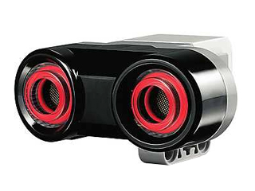

1. Introduction
The digital EV3 Ultrasonic Sensor generates sound waves and reads their echoes to detect and measure distance from objects. It can also send single sound waves to work as sonar or listen for a sound wave that triggers the start of a program. Students could design a traffic-monitoring system and measure distances between vehicles, for instance. There is an opportunity to discover how the technology is used in everyday items like automatic doors, cars and manufacturing systems.
-
Measures distances between one and 250 cm
-
Front illumination is constant while emitting and blinks while listening

2. How to use the sensor
2.1. Example to read distances
package ev3dev.sensors.ev3;
import lejos.hardware.port.SensorPort;
import lejos.robotics.SampleProvider;
import lejos.utility.Delay;
public class USSensorDemo {
private static EV3UltrasonicSensor us1 = new EV3UltrasonicSensor(SensorPort.S1);
public static void main(String[] args) {
final SampleProvider sp = us1.getDistanceMode();
int distanceValue = 0;
final int iteration_threshold = 100;
for(int i = 0; i <= iteration_threshold; i++) {
float [] sample = new float[sp.sampleSize()];
sp.fetchSample(sample, 0);
distanceValue = (int)sample[0];
System.out.println("Iteration: " + i + ", Distance: " + distanceValue);
Delay.msDelay(500);
}
}
}2.2. Example to use the Listen Mode
package ev3dev.sensors.ev3;
import ev3dev.sensors.Battery;
import lejos.hardware.port.SensorPort;
import lejos.robotics.SampleProvider;
import lejos.utility.Delay;
public class USSensorDemo2 {
//Robot Configuration
private static EV3UltrasonicSensor us1 = new EV3UltrasonicSensor(SensorPort.S1);
//Configuration
private static int HALF_SECOND = 500;
public static void main(String[] args) {
SampleProvider sp;
int distanceValue = 0;
for(int i = 0; i <= 10; i++) {
sp = us1.getListenMode();
int sampleSize = sp.sampleSize();
float[] sample = new float[sampleSize];
sp.fetchSample(sample, 0);
Delay.msDelay(2000);
sp = us1.getDistanceMode();
sampleSize = sp.sampleSize();
sample = new float[sampleSize];
sp.fetchSample(sample, 0);
distanceValue = (int)sample[0];
System.out.println("Iteration: {}, Distance: {}" + i + " "+ distanceValue);
}
System.out.println(Battery.getInstance().getVoltage());
}
}References